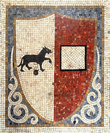
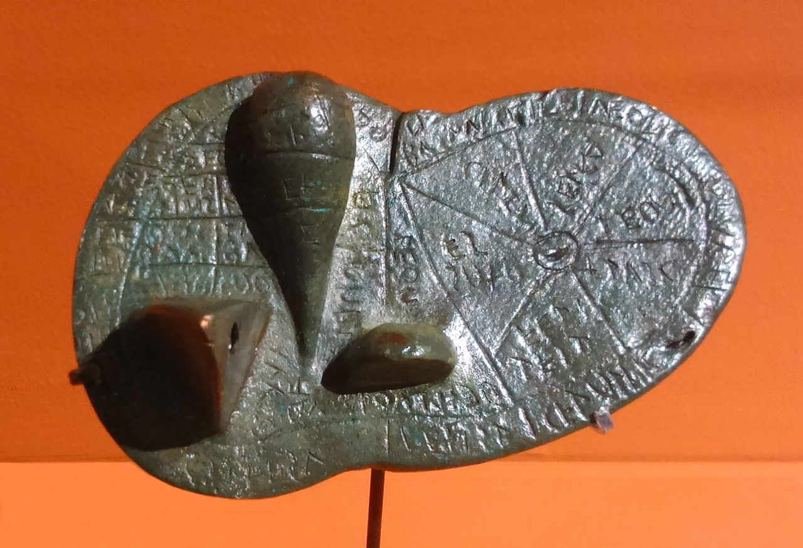
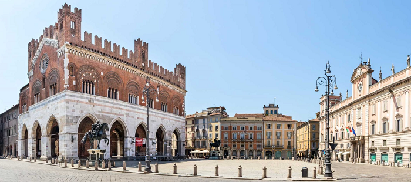

General info and history
Piacenza is a city and comune in the Emilia-Romagna region of northern Italy, tracing an origin in its name from the Latin verb placēre, "to please." In French, and occasionally in English, it is called Plaisance.
Piacenza is located at a major crossroads at the intersection of Route E35/A1 between Bologna and Milan, and Route E70/A21 between Brescia and Turin. Piacenza is also at the confluence of the Trebbia, draining the northern Apennine Mountains, and the Po, draining to the east.

Piacenza has a long history, and the first settler were Etruscans. Dating approximately to their period, the city has on display in its museum the so-called "Liver of Piacenza", an ancient Etruscan diagram on a life-sized bronze model of a sheep's liver.
These lands were then conquered by the Gauls, and after that by the Romans.
Piacenza was sacked during the course of the Gothic War (535–554). After a short period of being reconquered by the Roman emperor Justinian I, it was conquered by the Lombards, who made it a duchy seat. After its conquest by Francia in the ninth century, the city began to recover, aided by its location along the Via Francigena that later connected the Holy Roman Empire with Rome. Its population and importance grew further after the year 1000. That period marked a gradual transfer of governing powers from the feudal lords to a new enterprising class, as well to the feudal class of the countryside.
Piacenza today
Source: Wikipedia / Piacenza